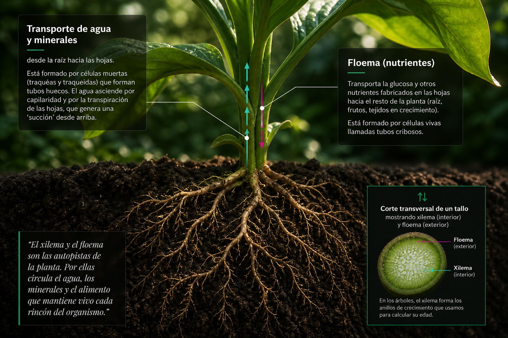
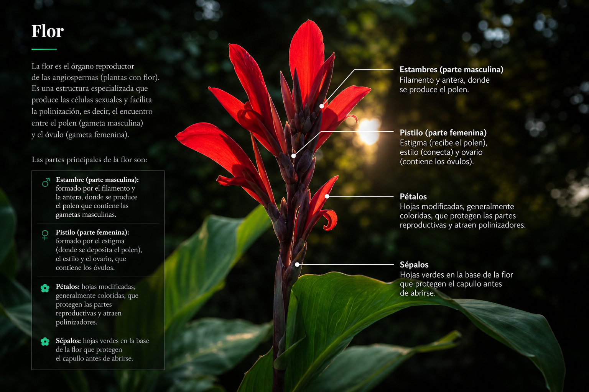
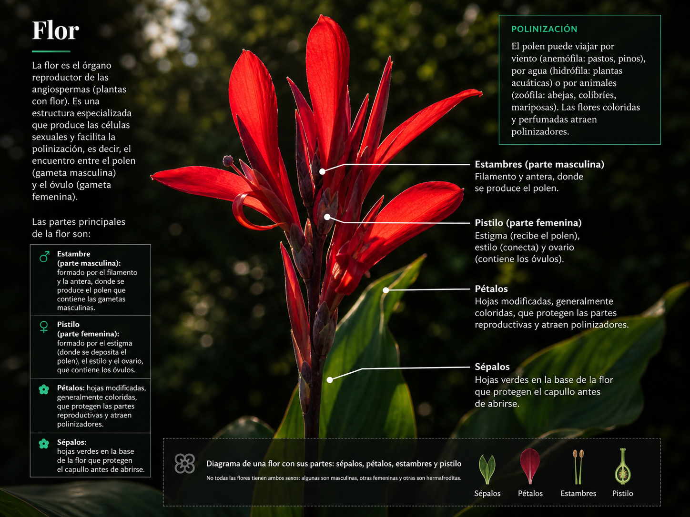

Las partes de una planta
Una planta es mucho más que un tallo con hojas. Es un sistema integrado donde cada órgano cumple funciones específicas y trabaja en conjunto con los demás. Las plantas vasculares (la mayoría de las que conocemos) tienen una organización básica en raíz, tallo y hojas, a lo que se suman las estructuras reproductivas: flores, frutos y semillas.
Raíz
La raíz es el órgano subterráneo de la planta. Tiene dos funciones principales: absorber agua y minerales del suelo y anclar la planta al sustrato, impidiendo que el viento o la lluvia la arranquen. En la punta de la raíz se encuentra la cofia, una estructura que protege el tejido en crecimiento mientras la raíz se abre paso entre las partículas del suelo.
La absorción ocurre principalmente a través de los pelos absorbentes, prolongaciones microscópicas de las células epidérmicas que aumentan enormemente la superficie de contacto con el suelo. Una sola planta de centeno puede tener hasta 14 mil millones de pelos absorbentes, con una superficie total de más de 400 m².
Funciones de la raíz
- • Absorción: toma agua y sales minerales del suelo por ósmosis y transporte activo.
- • Fijación: ancla la planta firmemente al suelo.
- • Almacenamiento: en muchas especies, la raíz acumula almidón y otros nutrientes de reserva.
- • Conducción: transporta el agua absorbida hacia el tallo a través del xilema.
Tallo
El tallo es el eje de la planta. Sus funciones son el sostén de hojas, flores y frutos, y el transporte de sustancias entre la raíz y las hojas. En su interior hay dos sistemas de conducción que funcionan como "cañerías" vivientes: el xilema y el floema.
Xilema (agua ↑)
Transporta agua y minerales desde la raíz hacia las hojas. Está formado por células muertas (tráqueas y traqueidas) que forman tubos huecos. El agua asciende por capilaridad y por la transpiración de las hojas, que genera una "succión" desde arriba.
Floema (nutrientes ↓)
Transporta la glucosa y otros nutrientes fabricados en las hojas hacia el resto de la planta (raíz, frutos, tejidos en crecimiento). Está formado por células vivas llamadas tubos cribosos.

Corte transversal de un tallo mostrando xilema (interior) y floema (exterior). En los árboles, el xilema forma los anillos de crecimiento.
Hojas
Las hojas son los órganos principales de la fotosíntesis. Son estructuras generalmente planas y delgadas, con una gran superficie para capturar la luz. En su interior, las células del mesófilo están repletas de cloroplastos. La epidermis de la hoja está cubierta por una capa cerosa llamada cutícula que evita la deshidratación.
En la cara inferior de la hoja se encuentran los estomas, poros microscópicos rodeados por dos células en forma de salchicha llamadas células oclusivas. Los estomas se abren y cierran para regular el intercambio de gases: permiten la entrada de CO₂ para la fotosíntesis y la salida de O₂ y vapor de agua. Una hoja puede tener entre 1.000 y 100.000 estomas por cm².
Formas de hojas
- • Simples: una sola lámina (manzano, roble, girasol).
- • Compuestas: dividida en folíolos más pequeños (fresno, ceibo, helecho).
- • Aciculares: en forma de aguja, típicas de coníferas (pino, abeto).
- • Paralelinervadas: venas paralelas, típicas de monocotiledóneas (pasto, maíz).
Flor
La flor es el órgano reproductor de las angiospermas (plantas con flor). Es una estructura especializada que produce las células sexuales y facilita la polinización, es decir, el encuentro entre el polen (gameta masculina) y el óvulo (gameta femenina).
Las partes principales de la flor son:
Estambre (parte masculina): formado por el filamento y la antera, donde se produce el polen que contiene las gametas masculinas.
Pistilo (parte femenina): formado por el estigma (donde se deposita el polen), el estilo y el ovario, que contiene los óvulos.
Pétalos: hojas modificadas, generalmente coloridas, que protegen las partes reproductivas y atraen polinizadores.
Sépalos: hojas verdes en la base de la flor que protegen el capullo antes de abrirse.

Partes de la flor: sépalos, pétalos, estambres y pistilo.

Corte transversal mostrando el ovario, óvulos y estructuras internas.
Fruto y semilla
Después de la fecundación, el ovario de la flor se transforma en fruto y los óvulos fecundados se convierten en semillas. El fruto protege a las semillas durante su desarrollo y, en muchos casos, ayuda a su dispersión.
Las semillas contienen un embrión (la futura planta en miniatura) y una reserva de nutrientes (endosperma o cotiledones) que alimentará al embrión durante la germinación. Todo está protegido por una cubierta llamada tegumento.
Mecanismos de dispersión
- • Viento (anemocoria): semillas con "alas" o "pelos" (diente de león, arce, ceibo).
- • Agua (hidrocoria): semillas que flotan (coco, algunas palmeras).
- • Animales (zoocoria): frutos carnosos que atraen animales (las semillas pasan por el tracto digestivo y se depositan lejos, con "fertilizante" incluido).
- • Explosión (autocoria): frutos que se abren violentamente lanzando las semillas (arvejilla, algunas leguminosas).
Preguntas para pensar
1. Si cortamos un tallo de apio y lo ponemos en agua con colorante, al rato veremos los vasos del xilema teñidos. ¿Por qué el agua sube en contra de la gravedad? ¿Qué fuerza la impulsa?
2. Observá una hoja por su cara inferior con una lupa. ¿Podés ver los estomas? ¿Qué forma tienen? ¿Están abiertos o cerrados?
3. ¿Por qué hay flores que no tienen pétalos coloridos ni perfume? ¿Cómo logran la polinización si no atraen insectos?